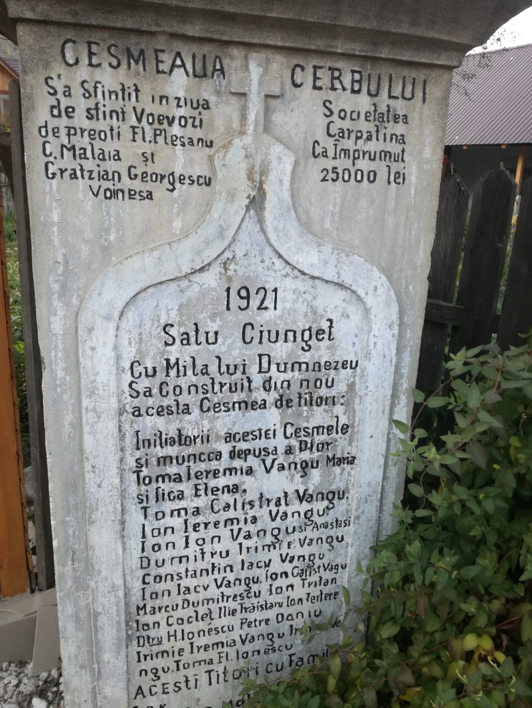

In acest document se regasesc si numele unor famili ai caror descendenti se pot intalni si in ziua de astazi in acest loc
Desi prima consemnare este in 1811 , unul din cei 3 munti ce inconjoara satul este consemnat in anul 1428 intr-un document semnat de Basarab Voievod.
In actul de consemnare a comunei Malaia , comuna de care apartine astazi Ciungetul , apar muntii si raurile ce inconjoara astazi satul
Prezenta satenilor mai este consemnata in 1720 si 1723 in acte ce reproduc procesul prin care acestia culegeau aurul de pe raul Rudareasa si il transformau in bare de aur
Exista dovezi ca aceasta zona a fost locuita deoarece aici s-au gasit vestigi arheologice datand intre mileniul 2 si secolul al 9-lea i.d. Hr.
Pe langa bucatile de ceramica de uz caznic, s-au mai gasit si pumnale, scule si topoare de cupru , precum si miniaturi ale rotilor de car.
Unele zone au chiar denumiri dacice , cum ar fi Fantana Jidovilor , sau padurea Vanata , care sunt denumiri dacice."Jidoveanul" are si inteles de mare, urias , titan.
Alte documente istorice ne povestesc despre valea Lotrului ca cel mai puternic bastion de rezistenta dacica.Dacii nesupusi Romei au fost numiti lotri=latrones.
Cele mai vechi ramasite umane gasite in zona invecinata a satului ajung la o datare de pana la 10 000 de ani vechime.
Pestera laptelui unde s-au gasit unele dintre artefacte ( un topot de bronz, bucati de vase ceraice):
In centrul satului se regaseste si un monument ce ne aminteste de soldatii decedati in razboi.
